铁柱AGI · 6/60
英文长文精选（上）
从单次对话走向全天候自主运行的云端智能体 (agent (an AI that acts on its own))时，很多用户最常遇到的麻烦是把控不住边界。其具体问题主要体现在以下几个方面：
- 有人把所有杂务塞给同一个 Bot，导致上下文迅速胀破，处理变慢的同时，容易在长对话中遗忘重要规则。
- 有人兴冲冲建了十几个 Bot，却因为缺乏统一调度入口，每天陷在不同会话窗口之间来回复制粘贴信息，沦为给 AI 跑腿的传话员。
- 还有些人急于让 Bot 接管外部账号，却忽略了单账号下共用一台云电脑的底层事实，误把角色名称当成安全隔离墙。
这一章精选了海外工程师、一线业务负责人与独立创业者在 2026 年 8 月到 9 月期间沉淀的 11 篇深度实战长文。每篇摘要均以中文提炼出作者的真实打法、关键配置与避坑心得，帮你少走弯路，搭建稳定可靠的自动化工作流 (workflow (a chain of steps done in order))。
文选内容涵盖底层共享电脑机制解析、16 分钟系统化起步法则与单一幕僚长（Chief of Staff）调度中枢。此外还包含 21 项高阶极客技巧，以及 GTM 客户拓展、社媒全自动运营、多客户外包交付与工程值班实操。
阅读前可以先参考下表指引。你可以通过表格快速定位与当前业务最匹配的方向与核心机制：
| 主题分类 | 文章标题 | 核心业务场景 | 关键机制与工具 |
|---|---|---|---|
| 机制理解与实操起步 | 《Grok Bot (xAI's AI assistant that comes with its own computer) Masterclass｜Avi Chawla》 | 底层共享电脑机制与技能 (skill (a saved how-to the bot can reuse))例程固化 | 单机多屏、/workspace 共享、Teach a task 录屏、Auto Review 拦截 |
| 机制理解与实操起步 | 《How to master Grok Bot in 16 minutes - Full Course｜CyrilXBT》 | 16 分钟系统化起步与分阶段进阶 | 单任务单 Bot 边界、循序渐进验证、Stripe 支付人闸 |
| 机制理解与实操起步 | 《Grok Bot Agents: how to automate your life in 10 Steps (Full-tutorial)｜Codez》 | 从日常跑腿到专业 Agent (an AI that takes steps on its own to finish a task) 编队演进 | 岗位契约（Charter）、一分钟可逆性分权、无头自动化执行 |
| 中枢调度与团队规章 | 《Grok Bot Chief of Staff: the charter, 10 rules and 5 routines I run｜kocer》 | 幕僚长单入口架构与 10 条底线守则 | 职责契约模板、10 条带测试用例家规、5 个核心例程 |
| 中枢调度与团队规章 | 《From Zero to a Running Company: The Grok Bot Agent Team Playbook｜NO1ennn》 | 从零搭建一人全功能数字公司 | 部门级分工、全流程证据链要求、四周递进放权法则 |
| 中枢调度与团队规章 | 《Every Grok Bot Hack I Know (Aug 2026)｜Matt Van Horn》 | 21 个高阶运维与提效黑客技巧 | Compound Engineering、独立 AgentMail 邮箱、Tailscale Cookie 同步 |
| 市场拓展与社媒运营 | 《Grok Bot for GTM｜Krista Letz》 | SpaceXAI 内部 GTM 全流程销售作战 | Granola 会议纪要联动 Figma、历史发件箱文风提取、意向信号研判 |
| 市场拓展与社媒运营 | 《Grok Bot vs Hermes vs OpenClaw vs Buzz + How I fully automated my X content with Grok Bot｜SCOTTY BEAM》 | 主流 Agent 框架横评与 X 内容流水线 | 3 Bot 闭环生产、云端免运维、单 Bot 独立例程配置 |
| 一人公司与工程交付 | 《How to Build an $18K/Month AI Agency on Grok (Exact Setup Inside)｜maestro》 | 基于双模型调用的自动化代运营机构 | 生产与审查物理解耦、19.5 万 Token (a small chunk of text; AI usage is counted in tokens) 阈值拦截、3 次质检熔断 |
| 一人公司与工程交付 | 《One-Computer Company: A Real Playbook For Running Solo On Grok Bot｜ZER》 | 独立开发者凭证管理与安全底线 | 单电脑凭证共享风险、凭证最小化录入、外发动作严格审批 |
| 一人公司与工程交付 | 《Grok Bot for Engineering｜Lingxi Li》 | SpaceXAI 官方工程团队 7×24 研运体系 | 5 研发 Bot + 1 运营 Bot、半小时 Notion (a notes and database app) 巡检、代码前后截图比对 |
准备搭建业务流程时，可以把下面这段结构化提示词 (prompt (the instruction you give the AI))发给主 Bot。让它协助梳理岗位分工与执行目录：
我打算参考英文社区的实战经验，在 Grok Bot 中搭建一套自动化业务工作流：【填入具体业务场景，例如 GTM 客户拓展 / 自动化研发巡检 / 社媒内容生产】。
请帮我完成以下系统设计：
1. 岗位与中枢规划：设立统一的中枢调度 Bot（Chief of Staff）与专职角色，明确各角色的负责目标、输入源与交付物，严格遵循一人一岗原则。
2. 权限与人闸控制：按照操作可逆性划分权限，数据调研、草稿起草与归档分类由 Bot 自主执行，涉及外部发信、资金支付、配置修改与删除操作必须挂起等待人工确认。
3. 交付标准与证据链：为每个交付物制定验收标准，要求包含真实数据来源、时间戳或截图凭证，找不到数据直接报错，严禁猜测推断。
4. 运行稳定性设计：规划定时例程与静默规则，无新异常时保持静默不发无用通知，遇到连续执行失败时及时熔断并报警。机制理解与实操起步
Grok Bot 自带持久化云电脑，能在后台独立执行。理清共享机制与权限边界，才能避开盲目建号与额度 (quota (how much use your plan allows))浪费。
Avi Chawla
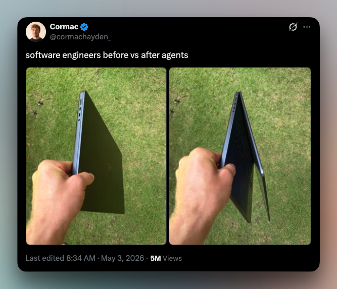
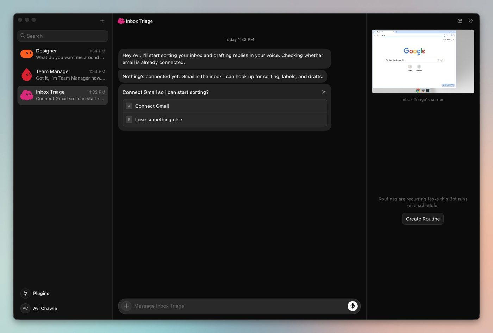
单账号下所有 Bot 共用云电脑的 /workspace 目录与浏览器会话，彼此没有安全隔离。全局设置里记得关掉本地电脑执行权限，把风险关在云端沙箱。
固化自动化操作分三步。
- 用 Teach a task 录屏 10 分钟做成技能
- 升级为定时例程
- 遇到敏感认证切回人工接管
审核规则按操作可逆性定，拦截审批保留一票否决权。
CyrilXBT
来源：How to master Grok Bot in 16 minutes - Full Course
作者：CyrilXBT @cyrilXBT
别盲目多开 Bot 浪费额度。先建一个幕僚长 Bot 读项目历史摸清瓶颈，挑出 3 项最该自动化的任务。
平时坚决单任务单 Bot，防邮件和记账混在一起撑爆上下文。
自动化任务按四个阶段推进。
- 人工跑通流程
- 单次触发验证
- 验证合格转定时 Routine (a task the bot runs on a schedule or a trigger)
- 碰到 Stripe 扣款与密码登录，坚决交还人工
Codez
来源：Grok Bot Agents: how to automate your life in 10 Steps (Full-tutorial)
作者：Codez @0xCodez
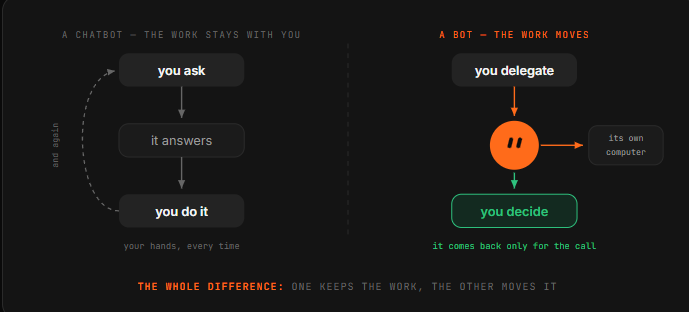
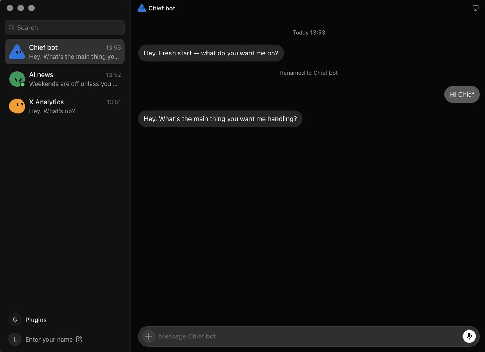
提示词按岗位契约（Charter）写成三段，定清负责领域、优良标准与禁止动作。浏览器里演示一遍录成技能，配日程或邮件触发器全天跑。
权限按一分钟可逆性划分：
| 操作类型 | 业务动作 | 权限与执行策略 |
|---|---|---|
| 完全可逆 | 归档、提炼与草稿 | 机器自主跑完 |
| 高风险/不可逆 | 对外发信与资金变动 | 必须等人工点击批准 |
每周固定复盘运行记录，坚决清理连续多周无产出的死例程。
中枢调度与团队规章
Bot 多了容易抢指令或互相传错话。最稳的做法是用单一中枢 Bot 统一调度，定死规矩。
Grok Bot Chief of Staff: the charter, 10 rules and 5 routines I run｜kocer
来源：Grok Bot Chief of Staff: the charter, 10 rules and 5 routines I run
作者：kocer @kocer_eth 作者：kocer (@kocer_eth)
担心角色越权或传话混乱，第一周只上线一个幕僚长 Bot 管全盘。配上职责契约与十条家规（每条附 30 秒实测用例），跑早间简报、周五复盘等 5 个固定例程。
- 专业 Bot 必须全盘继承中枢权限红线，不得擅自放权。
- 交付结果必须附带事实来源，没有出处的数据一律留白。
- 一旦输入 STOP ALL 立即全盘刹车。
From Zero to a Running Company: The Grok Bot Agent Team Playbook｜NO1ennn
来源：From Zero to a Running Company: The Grok Bot Agent Team Playbook
作者：NO1ennn @N01ennn
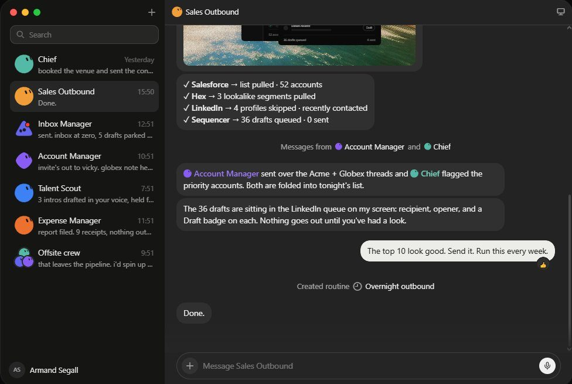
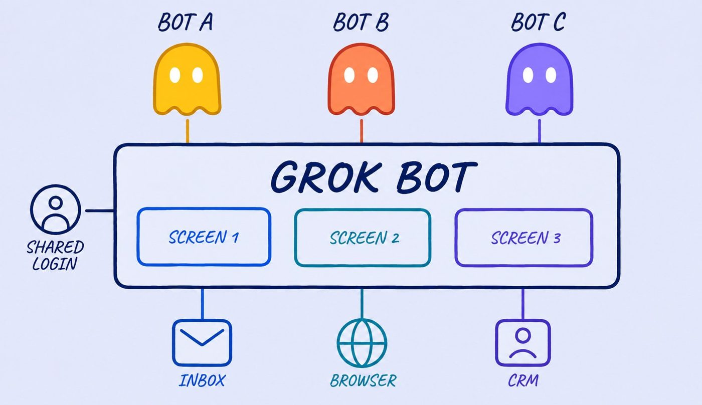
作者：NO1ennn (@N01ennn)一人团队可以用 1 个幕僚长加 4 至 6 名专员撑起公司。给团队下达整体业务目标，让 Bot 自行切分阶段并传递所有权。
验收必须推行强证据链。 交付时必须提供操作录屏与数据出处，未核实的信息直接注明缺失。
自动化管理采取四周放权节奏。
- 第一周逐字核查草稿。
- 第四周仅审验周度摘要。
Every Grok Bot Hack I Know (Aug 2026)｜Matt Van Horn
来源：Every Grok Bot Hack I Know (Aug 2026)
作者：Matt Van Horn @mvanhorn
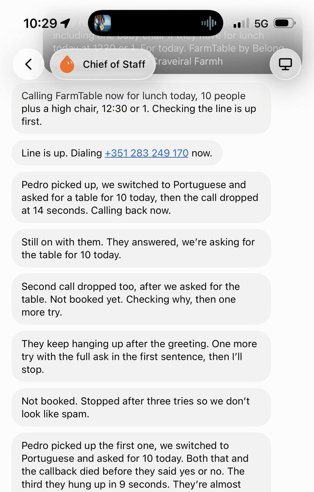
作者：Matt Van Horn (@mvanhorn)
管理 15 个 Bot 组成的矩阵时，复杂任务先出计划再施工。用专属邮箱隔离发信信誉，靠 Tailscale 保持会话 Cookie 持续同步。
- 监控例程在无新情报时保持沉默，不产生通知噪音。
- 移动端直接发截屏交代任务，交由多模态能力自行提取日期与信息。
- 任务拆解在 10 分钟录屏上限内，保证技能沉淀一次成型。
市场拓展与社媒运营
Grok Bot for GTM｜Krista Letz
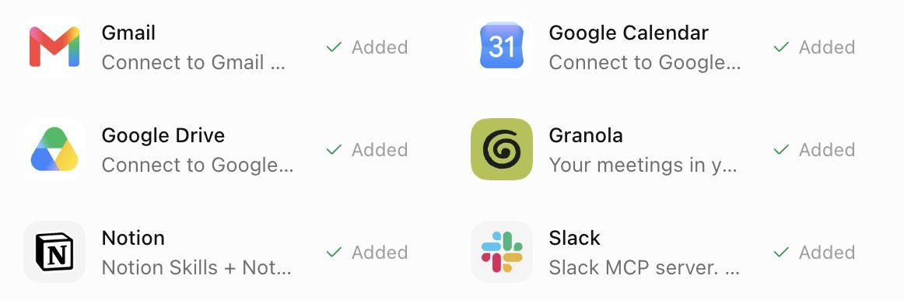
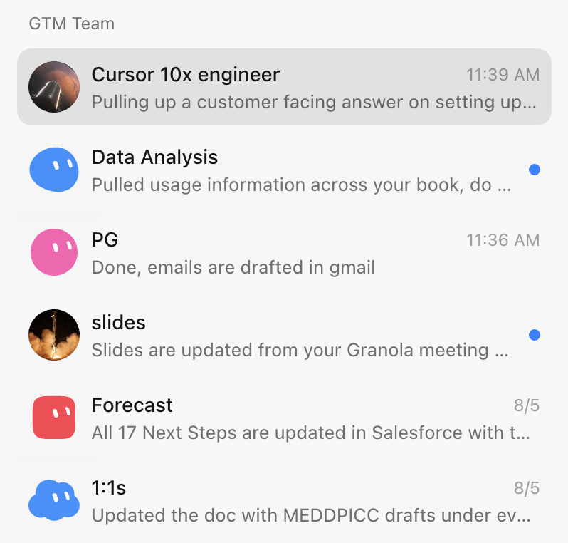
Krista Letz 在 SpaceXAI 用 Grok Bot 跑大客户销售。通话结束前几分钟，系统读取 Granola 会议纪要，自动在 Figma 幻灯片生成痛点总结页。
- 扫描发件箱历史学个人文风，只生成待发草稿，不擅自触达。
- 挖意向时，强制关联 CRM 排除近九十天已联系的客户，杜绝撞车和机械骚扰。
Grok Bot 社媒全自动流水线｜SCOTTY BEAM
来源：Grok Bot vs Hermes vs OpenClaw vs Buzz + How I fully automated my X content with Grok Bot
作者：SCOTTY BEAM @ScottyBeamIO
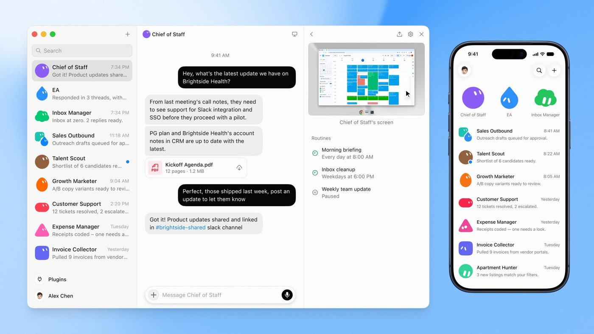
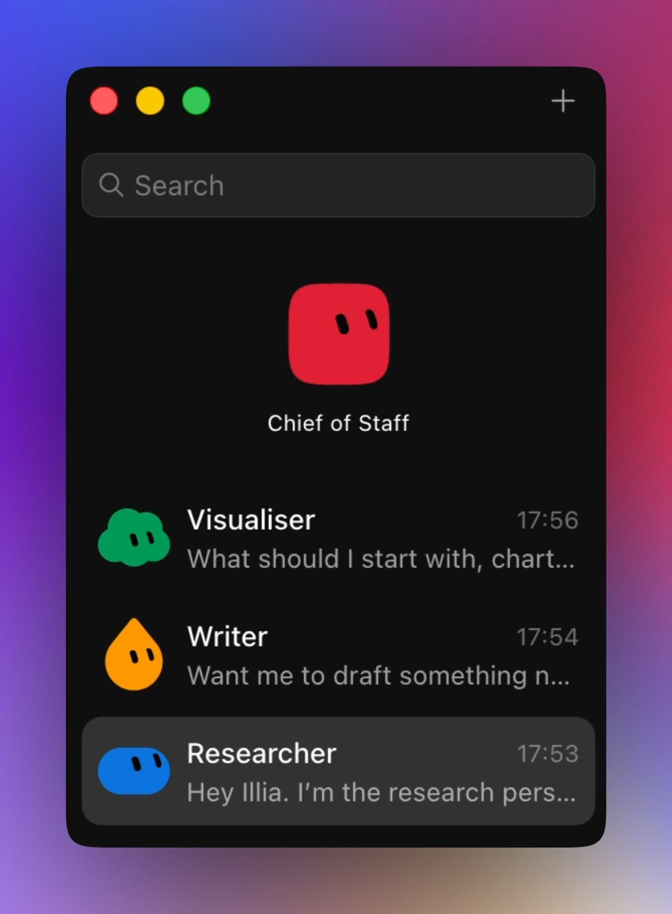
SCOTTY BEAM 用共享云电脑的文件系统流转物料，把搜趋势、按参考图生图和起草推文分给三个 Bot 协作。
| 方案类型 | 代表产品 | 核心特征与运维成本 |
|---|---|---|
| 云端托管 | Grok Bot | 免搭环境，维护省心 |
| 自托管 | Hermes、Buzz 等 | 需自行搭建与维护环境 |
- 团队群聊存不住定时例程，转在各个 Bot 的独立会话中单独配置触发调度。
- 顶层设巡查 Bot 统一生成每日执行汇总，推文最终发布权始终留在人工手里。
一人公司与工程交付
maestro
来源：How to Build an $18K/Month AI Agency on Grok (Exact Setup Inside)
作者：maestro @maestrooth
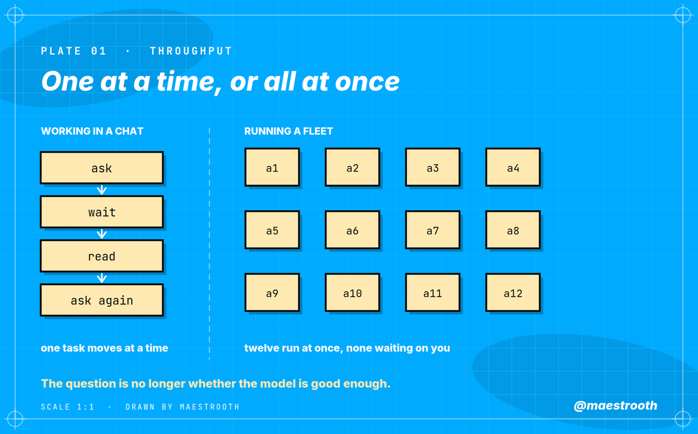
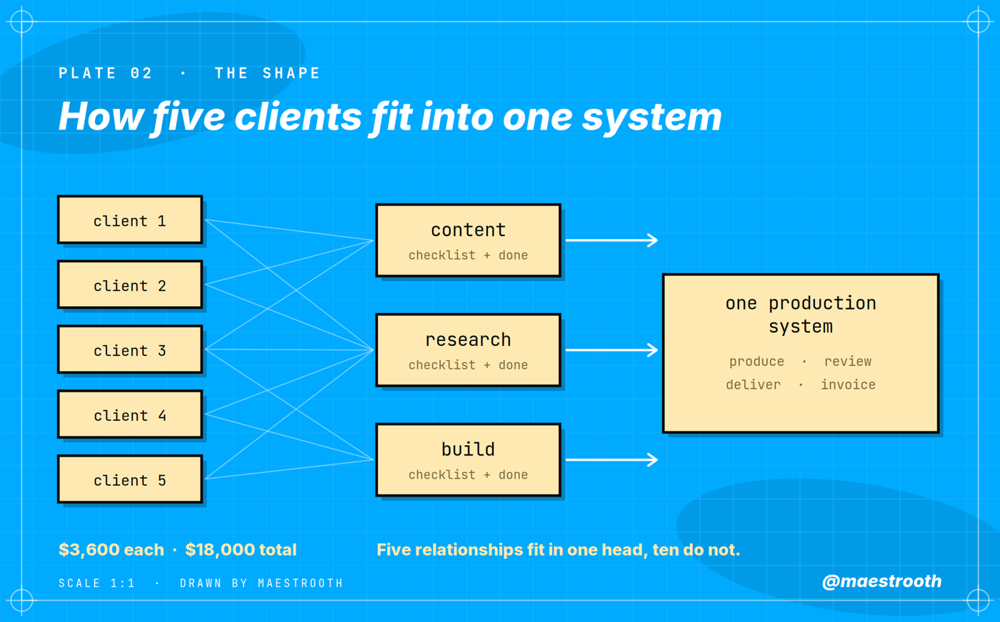
作者服务 5 家客户月入 1.8 万美元（未核）。路由层单次请求限 19.5 万 Token 以防计费翻倍。
- 质检 Bot 仅设只读，按清单排查无出处数据与格式漏洞。
- 质检失败 3 次强制熔断，转人工兜底。
ZER
来源：One-Computer Company: A Real Playbook For Running Solo On Grok Bot
作者：ZER @zerqfer
多 Bot 共享云电脑会话，安全全看录入的凭证。
| 事务类型 | 权限防线 |
|---|---|
| 日常琐事 | 放权 Bot 处理 |
| 核心资产 | 坚决不录入云端 |
| 外部支付 | 审批必须人工卡死 |
Lingxi Li
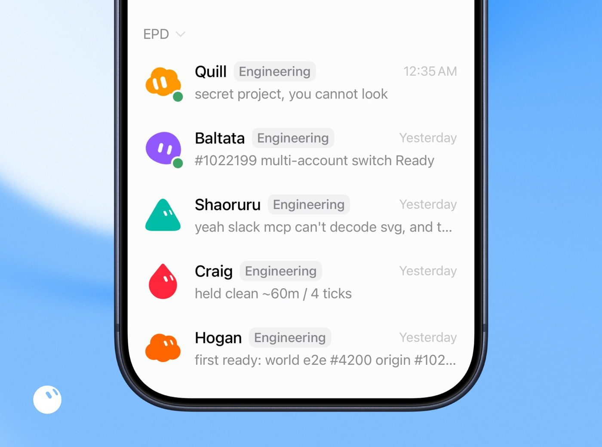
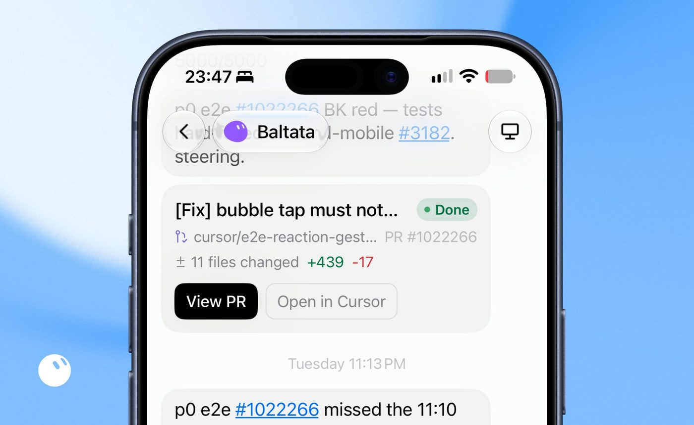
团队月并超 2000 个 PR、管 200 多个并发 Agent。拆 5 名研发 Bot 和 1 名运营 Bot，每半小时拉 Notion 排障。
- 补丁交付必附前后对比截图，靠多模态核验变更。
- 运营 Bot 组织晨会复盘，凌晨定时跑代码清理。
Source: https://bot.fmcat.top/cases/en1